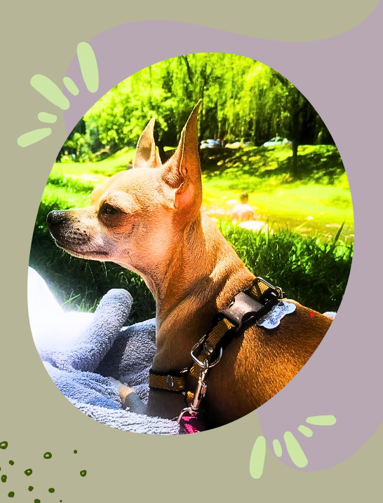

Sobre nosotros los patas cortas
Un blog de chihuhuas
El chihuahua es una de las razas caninas preferidas por los amantes de los perros mini, ya que cuenta con la característica de ser el perro más pequeño del mundo. En este blog sobre la raza Chihuahua vamos a contarte todo sobre esta maravillosa especie de perro ya que posee insignificantes habilidades tanto en el hogar como aventuras en el exterior

Características generales de los perros chihuahua
Los que conocen la raza Chihuahua saben muchos de sus rasgos, pero seguro hay varios que te pasaron desapercibidos. Por eso te contamos las características de esta raza para que no se te escape ninguna.